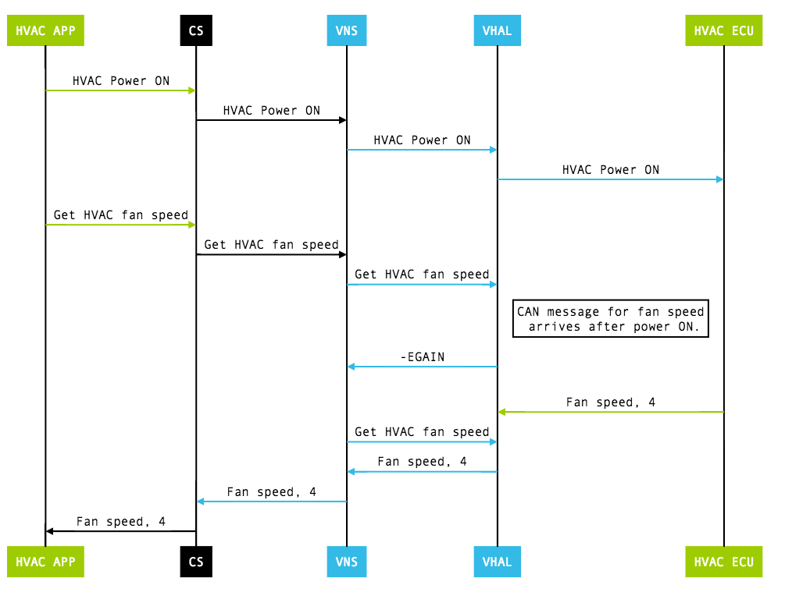
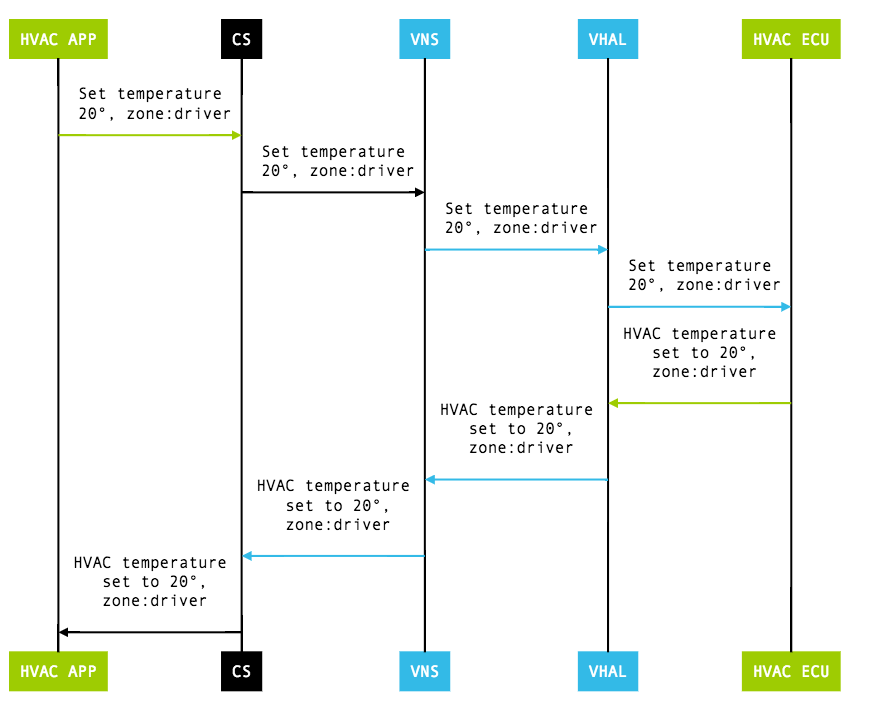

The vehicle HAL interface defines the properties OEMs can implement and contains property metadata (for example, whether the property is an int and which change modes are allowed). The vehicle HAL interface is based on accessing (read, write, subscribe) a property, which is an abstraction for a specific function.
The vehicle HAL uses the following interfaces:
vehicle_prop_config_t const *(*list_properties)(..., int*
num_properties)
(*get)(..., vehicle_prop_value_t *data)
(*set)(..., const vehicle_prop_value_t *data)
(*subscribe)(..., int32_t prop, float sample_rate, int32_t
zones)
(*release_memory_from_get)(struct vehicle_hw_device* device,
vehicle_prop_value_t *data)
The vehicle HAL uses the following callback interfaces:
(*vehicle_event_callback_fn)(const vehicle_prop_value_t
*event_data)
(*vehicle_error_callback_fn)(int32_t error_code, int32_t property,
int32_t operation)
Properties can be read-only, write-only (used to pass information to vehicle
HAL level), or read and write (support of most properties is optional). Each
property is uniquely identified by an int32 key and has a predefined type
(value_type):
INT32 (and array), INT64, BOOLEAN,
FLOAT (and array), string, bytes.The vehicle HAL defines three zone types:
vehicle_zone
vehicle_seat
vehicle_window
Each zoned property should use pre-defined zone type. If necessary, you can use a custom zone type for each property (for details, see Handling custom properties).
Use vehicle_prop_config_t to provide configuration information
for each property. Information includes:
access (r, w, rw)change_mode (represents how property is monitored: on change vs
continuous)min_value (int32, float, int64), max_value (int32,
float, int64)min_sample_rate, max_sample_ratepermission_modelprop (Property ID, int)value_typezone_flags (represents supported zones as bit flags)In addition, some properties have specific configuration flags to represent capability.
A zoned property is equivalent to a collection of multiple properties where each sub property is accessible by specified zone value.
get call for zoned property always includes zone in request, so
only the current value for the requested zone should be returned.set call for zoned property always includes zone in request, so
only the requested zone should be changed.subscribe call includes flags of all zones subscribed. Events
from un-subscribed zones should not be reported.During initialization, the value for the property may not be available yet as
the matching vehicle network message has not yet been received. In such cases,
the get call should return -EAGAIN. Some properties
(such as HVAC) have separate on/off power property. Calling get for
such a property (when powered off) should return a special value
(VEHICLE_INT_OUT_OF_RANGE_OFF/VEHICLE_FLOAT_OUT_OF_RANGE_OFF)
rather than returning an error.
In addition, some properties (such as HVAC temperature) can have a value to indicate it is in max power mode rather than in specific temperature value. In such cases, use special values to represent such state.
Example: get HVAC Temperature
Figure 1. Get HVAC temperature (CS = CarService, VNS = VehicleNetworkService, VHAL = Vehicle HAL)
A set call is an asynchronous operation involving event
notification after a requested change is made. In a typical operation, a
set call leads to making a change request across vehicle network.
When the change is performed by the electronic control unit (ECU) owning the
property, the updated value is returned through vehicle network and the vehicle
HAL sends an updated value as an event to vehicle network service (VNS).
Some set calls may require initial data to be ready but during
initialization, such data may not be available yet. In such cases, the
set call should return -EAGAIN. Some properties with
separate power on /off should return -ESHUTDOWN when the property
is powered off and set cannot be done.
Until set is made effective, get does not
necessarily return the same value as what is set. The exception is a property
with change mode of VEHICLE_PROP_CHANGE_MODE_ON_SET. This property
notifies change only when it is set by external component outside Android (for
example, clock properties such as VEHICLE_PROPERTY_UNIX_TIME).
Example: set HVAC Temperature
Figure 2. Set HVAC temperature (CD = CarService, VNS = VehicleNetworkService, VHAL = Vehicle HAL)
To support partner-specific needs, the vehicle HAL allows custom properties that are restricted to system apps. Use the following guidelines when working with custom properties:
VEHICLE_PROPERTY_CUSTOM_START,
VEHICLE_PROPERTY_CUSTOM_END] range. Other ranges are reserved for future
extension; using such ranges can cause conflicts in future Android releases.value_type. BYTES type allows passing raw
data, so this is enough in most cases. Sending big data frequently through
custom properties can slow down the whole vehicle network access, so be careful
when you add a big payload.vendor_vns_policy.xml (otherwise, all
access will be rejected).VendorExtensionManager (for Java components) or
via Vehicle Network Service API (for native). Do not modify other car APIs as it
can lead to compatibility issues in the future.You can use the vehicle HAL to control HVAC by setting HVAC-related properties. Most HVAC properties are zoned properties, but a few are non-zoned (global) properties. Example properties defined include:
VEHICLE_PROPERTY_HVAC_TEMPERATURE_SET
VEHICLE_PROPERTY_HVAC_RECIRC_ON
For full list of HVAC properties, search for
VEHICLE_PROPERTY_HVAC_* in vehicle.h.
Vehicle HAL sensor properties represent real sensor data or policy information such as driving status. Some sensor information (such as driving status and day/night mode) is accessible by any app without restriction as the data is mandatory to build a safe vehicle application. Other sensor information (such as vehicle speed) is more sensitive and requires specific permissions that users can manage.
Supported sensor properties include:
DRIVING_STATUS
NIGHT_MODE
GEAR_SELECTION/CURRENT_GEAR
VEHICLE_SPEED
ODOMETER
FUEL_LEVEL
FUEL_LEVEL_LOW